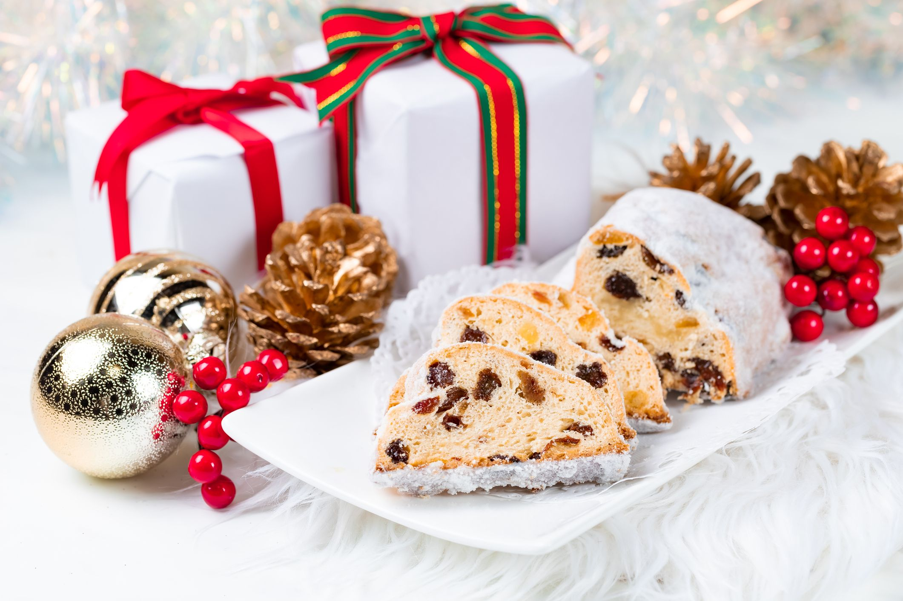

Christmad Bread

INGREDIENTS
¼ cup dried cranberries
¼ cup dried currants
⅛ cup chopped dried cherries
⅛ cup chopped dried mango
⅛ cup chopped candied citron
¼ cup dark rum
cooking spray
½ cup unsalted butter, softened
¼ cup packed brown sugar
1 large egg
½ cup all-purpose flour
¼ teaspoon salt
¼ teaspoon ground cinnamon
⅛ teaspoon baking soda
¼ cup unsulfured molasses
2 tablespoons milk
¼ cup chopped pecans
6 tablespoons dark rum, or more as needed
extra-virgin olive oi
STEPS
Place cranberries, currants, cherries, mango, and citron into a medium bowl and stir to combine. Pour in rum and mix again.
When ready to make the fruitcake, preheat the oven to 325 degrees F. Cut circle of parchment paper. Spray a round pan with cooking spray. Place the parchment circle in the bottom of the pan, and spray it with cooking spray.
Beat butter and brown sugar in a large bowl until light and creamy. Beat in egg until incorporated.
Whisk flour, salt, cinnamon, and baking soda together in a large bowl; set aside. Stir molasses and milk together in a separate bowl until well combined. Add flour mixture to butter mixture.
Stir in soaked fruit and pecans. Scrape batter into the prepared pan and smooth out the top.
Bake in the preheated oven until a toothpick inserted in the center comes out clean, 40 to 45 minutes.
While the fruitcake is baking, cut one piece parchment paper and one piece cheesecloth, each large enough to wrap around the cake.
Remove fruitcake from the oven and cool in the pan for 10 minutes, then drizzle 2 tablespoons rum over top.